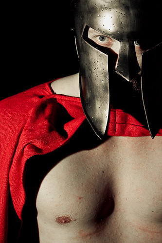

This character's name is Darius. He looks very manly and is very muscular. He always has a spartan helmet and a black cape on whilst he roams the village to make sure everyone is okay and happy.
 "Spartan hero 1" by simon plestenjak is licensed under CC BY-NC-ND 2.0Click the links below to find out more about Darius